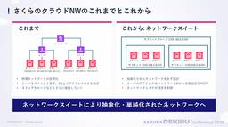
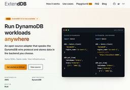

Publickey
https://www.publickey1.jp/
Enterprise ITに軸足を置き、新たにIT業界を変えつつあるクラウドコンピューティングやHTML5など最新の話題を、ブロガー独自の分析を交え、充実した記事で紹介するブログです。毎日更新しています。
フィード
さくらインターネットが大規模イベント開催。田中社長「日本から世界へ挑戦するためのデジタル基盤を支える」 2
2
Publickey
さくらインターネットは11月25日と26日の2日間、同社にとって初のパートナーやデベロッパー向け大規模イベント「SAKURA DEKIRU Conference 2026」を都内で開催しました。 2日目となる「Cloud/AI Day」の基...
2日前

さくらのクラウド、新ネットワーク基盤、新データベースサービスなど投入。東京リージョン第三ゾーン新設も発表 11
Publickey
さくらインターネットは11月25日と26日の2日間、大規模イベント「SAKURA DEKIRU Conference 2026」を都内で開催し、さくらのクラウドに関して東京リージョンの第三ゾーン、新ネットワーク基盤や新データベースサービスの...
2日前

さくらインターネット、AIを月額固定料金で提供する「シンプルAI」発表、システムへの組み込み用途を想定 138
Publickey
さくらインターネットは11月25日と26日の2日間、大規模イベント「SAKURA DEKIRU Conference 2026」を都内で開催。2日目の基調講演で、新サービスとして月額固定料金でAIを提供する「シンプルAI」を発表しました。 ...
2日前

さくらインターネット、AWSやAzureなど他クラウドでバックアップ可能な新ストレージ「Object Storage Suite」（OS2）発表 33
Publickey
さくらインターネットは11月25日と26日の2日間、大規模イベント「SAKURA DEKIRU Conference 2026」を都内で開催。2日めの基調講演で、新たなストレージサービス「Object Storage Suite」（OS2）...
2日前

MCPに新機能「Skills over MCP」登場。ツールとの接続だけでなく使い方のスキルもMCP経由で提供 170
Publickey
AIエージェントと外部ツールを接続する業界標準となっているMCP（Model Context Protocol）に、新機能として「Skills over MCP」がβ版として追加されました。 Skills over MCPを利用することで、...
3日前

「Google Workspace MCPサーバ」と「Google Workspace CLI」が正式版としてリリース 63
Publickey
Googleは、Google WorkspaceをAIエージェントが操作するためのインターフェイスとして「Google Workspace MCP Server」と「Google Workspace CLI」が正式版になったことを発表しまし...
3日前

AWS、DynamoDB互換データベースをローカルマシンで構築可能にするオープンソース「ExtendDB」がバージョン1.0に到達 56
Publickey
Amazon Web Services（AWS）は、同社がクラウドサービスとして提供しているNoSQLデータベース「Amazon DynamoDB」の互換データベースを、Windows、Linux、macOSなどのOSに対応したユーザーのロ...
4日前

jQuery 4.1正式版がリリース、内部実装をquerySelectorAllに統一でより高速に。jQuery 3.x系最後となるjQuery 3.8も同時リリース 63
Publickey
jQuery開発チームは、JavaScriptライブラリ「jQuery」の最新版となる「jQuery 4.1」正式版のリリースを発表しました。 また同時にjQuery 3.x系の最後のリリースとなる「jQuery 3.8」も同時にリリースし...
4日前

DHH氏が開発する「Omarchy 4.5」リリース。一般的なマルチウィンドウをサポート。最速7秒で導入、Appleシリコン対応、Webアプリ版MS Office用ランチャーなど新機能 118
Publickey
Ruby on Railsの作者として知られるDHH氏が主導して開発しているデスクトップ向けのLinux OS「Omarchy」の最新版「Omarchy 4.5」（別名Omarchy Quattro RS）正式版がリリースされました。 Om...
5日前

PostgreSQL 19正式リリース。ノンブロッキングなREPACKやI/Oワーカーのオートスケールなど新機能 30
Publickey
オープンソースのリレーショナルデータベース「PostgreSQL」の最新版となる「PostgreSQL 19」正式版がリリースされました（日本語のプレスリリース）。 PostgreSQLは毎年9月もしくは10月にメジャーバージョンアップが行...
5日前

マイクロソフト、クラウドやオンプレミスのデータベースを一元管理する「Database Hub」正式リリース。AIエージェントによる運用監視の自動化も
Publickey
マイクロソフトは日本時間11月18日未明に開幕した年次イベント「Microsoft Ignite 2026」で、Microsoft Azureやオンプレミス、他社クラウドにあるデータベースなど、管理者が権限を持つデータベースを自動的に一覧表...
9日前
マイクロソフト、AIによるサイバー攻撃にAIエージェントで対抗する新サービス「Microsoft Perception」提供開始
Publickey
マイクロソフトは日本時間11月18日未明に開幕した年次イベント「Microsoft Ignite 2026」で、AIによるサイバー攻撃に対抗するためのAIエージェントによる新サービス「Microsoft Perception」の提供開始を発...
10日前
マイクロソフト、AIが生成したアプリを企業内で安全に実行するランタイム「Copilot Managed Runtime」正式リリース
Publickey
マイクロソフトは日本時間11月18日未明に開幕した年次イベント「Microsoft Ignite 2026」で、AIが生成したアプリなどを企業内で安全に実行するための基盤となる「Copilot Managed Runtime」の正式リリース...
10日前
Windows Server 2028がパブリックプレビュー公開。Microsoft FoundryなどAIによる推論の実行基盤へと拡張
Publickey
マイクロソフトは日本時間11月18日未明に開幕した年次イベント「Microsoft Ignite 2026」で、次期サーバ向けOSとなるWindows Server 2028のパブリックプレビュー公開を発表しました。 企業内のAI推論基盤へ...
10日前
［速報］マイクロソフト、コーディング用AIモデルとして高性能かつ低価格「MAI Code 2」「MAI Code 2 Flash」発表
Publickey
マイクロソフトは日本時間11月18日未明に開幕した年次イベント「Microsoft Ignite 2026」で、同社が開発したコーディング用AIモデルのフラグシップで高性能かつ低価格を売り文句とする「MAI Code 2」と、さらに安価な「...
10日前